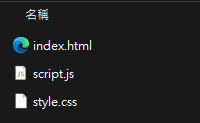
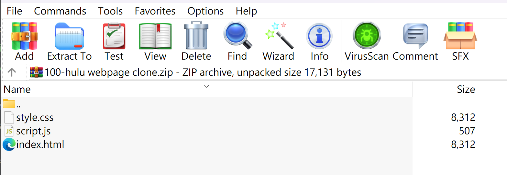
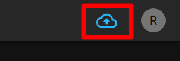
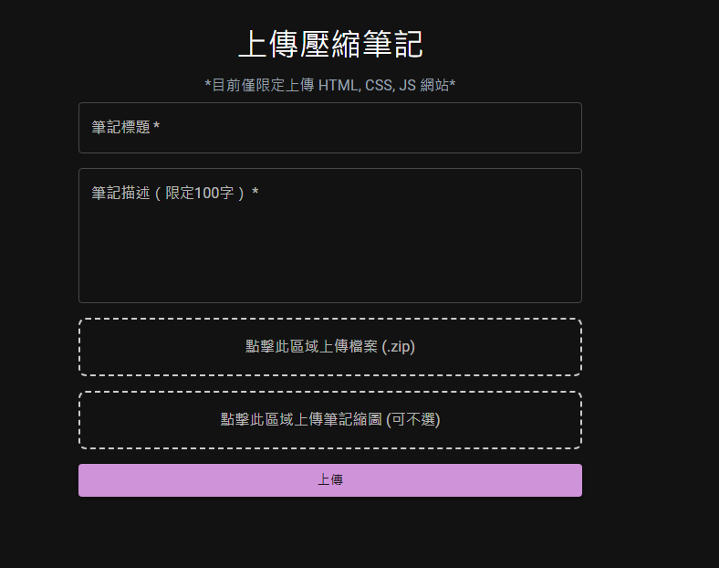
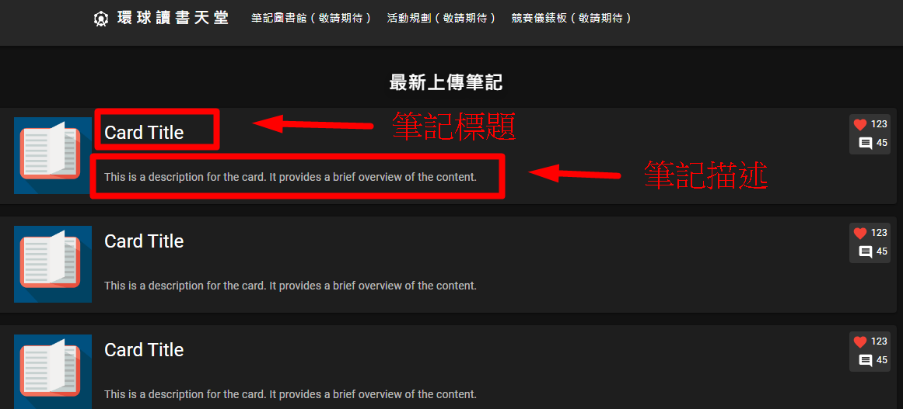

介紹
使用者可以用網頁前端技術（HTML, CSS, JS）設計筆記。
（也可以用 React, Vue, Angular 等，只要輸出成有 index.html 的前端就可以）。
這份教學筆記也是同樣的筆記架構做出來的。
準備前端專案
首先，假設你有個前端專案，如下：

建立 Zip 壓縮檔
將此專案壓縮成 Zip 壓縮檔（index.html 應該要顯示在壓縮檔裡最外層，請不要多一層資料夾），如下：

上傳筆記
接下來就要來做上傳動作了！
請按下上傳按鈕：

填入相關的所有資料：
- 筆記標題：會顯示在圖書館或主頁面的筆記大 title。
- 筆記描述：同樣會顯示在圖書館或主頁面上的筆記描述。

完成後，筆記就會出現在圖書館或主頁面上！
